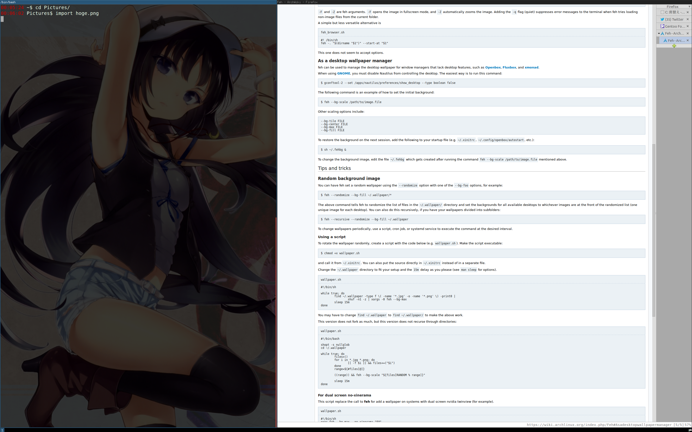

2014年 3月 3日 月曜日 00:09:07 JST
tiling wm っていう文化を初めて知った。 学科でよくわからないデスクトップだった人が一人いたけど、 今見たら i3wm だったのかもしれない。 i3wmさん、一回インストールしたらアンインストールしようとしてもセッション選択肢に残ってる。 awesomeさん、インストールしてもセッション選択肢に現れない。
i3wm の絵。背景画像は feh --bg-max による。 